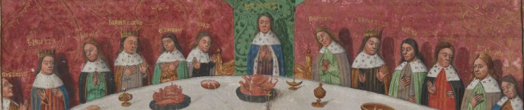

Description codicologique du manuscrit Paris, BnF, fr. 112
Cette fiche s'inspire du modèle proposé par l'IRHT (Olivier Legendre, Jacques-Hubert Sautel, Caroline Heid, Caroline Bourlet, Flamand Jean-Marie. Livret du stage d’initiation au manuscrit médiéval (domaine latin et roman). DEA. Paris, stage annuel, en octobre (dernière édition : 5-9 octobre 2009), 2006, 141 p. En ligne: https://cel.archives-ouvertes.fr/cel-00139917v4/document)
Description matérielle
Signalisation du manuscrit
- Manuscrit numérisé volume 1, volume 2 et volume 3.
- Titre du manuscrit tel que répertorié par la BnF : Compilation arthurienne de Micheau Gonnot
- Titre du texte tel que répertorié dans Jonas : Compilation arthurienne
- Ville : Paris
- Dépôt : Bibliothèque nationale de France (BnF)
- Cote : Français 112
Datation & localisation
- XVe siècle; 4 juillet 1470.
- France. Centre (d'après le Fichier Avril)?
Description rapide
- Signalement rapide
- Nombre de volumes : 3.
- Nombre de feuillets : 762 d'après le catalogue de la BnF (mais il y a des problèmes dans la foliotation, donc voir plus bas pour la foliotation); il faut plutôt compter 239, 301 et 235.
- Support : Parchemin (selon la BnF et Jonas).
- Dimensions du manuscrit :
- Pages : 430x300 mm
- Surface écrite (totale et par colonne) : approximativement 315x225 mm.
- Support: parchemin.
- Encre: Texte à l'encre noire avec rubriques.
- Etat du manuscrit
- Copie luxueuse.
- Le manuscrit était conservé en un seul volume jusque dans les années 1980 (cf. note du Fichier Avril). La compilation compte quatre livres, dont le premier manque. D'après la base Jonas: "Depuis sa restauration dans les années 1980, le manuscrit est découpé en 3 tomes correspondant aux livres II à IV (le livre I manquait déjà au XVIe s." Par ailleurs, des feuillets semblent manquer: les feuillets 10 à 15 du tome 1 et le feuillet 100 du tome 2 (cf. catalogue en ligne de la BnF), à moins qu'il ne s'agisse d'une erreur de numérotation. Des feuillets manquent également dans le dernier volume, après le fol. 212v.
Organisation du volume
- Système de numérotation
- Foliotation ancienne en chiffres romains qui comporte quelques erreurs et doublons.
- Remarques
- Quelques problèmes de numérotation: xxxix apparaît deux fois mais xl manque dans le t. 1 par exemple.
- Doublons dans la foliotation (fol. 154 et 154bis dans le t. 1; fol. 109 et 109bis et fol. 128 et 128bis dans le t. 2; fol. 75 et 75bis, 109 et 109bis dans le t. 3),
- Feuillets manquants (10 à 15 du tome 1; 100 dans le t. 2; pour le t. 3, voir les réclames, il manque peut-être un cahier après le feuillet 212v, entre 213 et 217). Dans le volume 2, d'après Pickford, le feuillet 100 ne manque pas, mais il s'agit d'une erreur de numérotation (à vérifier pendant la transcription).
- Réclames (pas de signature)
- À la fin de chaque cahier dans le premier volume (8v; 16v, 24v, 32v, 40v, 48v, 56v, 64v, 72v, 80v, 88v, 96v, 104v, 112v, 120v, 128v, 136v, 144v, 152v, 159v, 167v, 176v, 184v, 192v, 200v, 208v, 216v, 225v, 233v, 242v);
- Dans le volume 2, à la fin de chaque cahier (8v, 16v, 24v, 32v, 40v, 56v, 64v, 72v, 80v, 88v, 96v, 105v, 113v, 121v, 128v, 136v, 144v, 152v, 160v, 168v, 176v, 184v, 192v, 200v, 208v, 216v, 224v, 232v, 240v, 248v, 256v, 264v, 272v, 280v, 288v, 296v); Pickford indique le dernier cahier ne comporte que 5 feuillets.
- Dans le volume 3, à la fin de tous les cahiers (8v, 16v, 24v, 32v, 40v, 56v, 64v, 72v, 79v, 87v, 95v, 103v, 110v, 118v, 126v, 134v, 142v, 148v, 156v, 164v, 172v, 180v, 188v, 196v, 204v, 212v), puis il y a un problème de numérotation, et le folio 212 a été corrigé en 217 par une main ultérieure, de même que les suivants, la réclame du 212v ne correspond pas à la suite, ce qui laisse penser qu'il manque peut-être un cahier. Il n'y a pas de réclames jusqu'à la fin du volume 3, et en n'ayant pu consulter le manuscrit sinon par sa numérisation, la répartition et le nombre des cahiers n'a pu être déterminé pour la fin du volume. Pickford indique qu'il s'agit de quaternions, sauf le dernier qui ne comporte que 6 feuillets.
- Composition des cahiers
- Le volume 1 est composé de 31 cahiers, principalement des quaternions, mais certains ont une page ajoutée (voir ci-dessus les réclames); le second volume est composé de 37 cahiers, principalement des quaternions (voir les réclames); on n'a pu à partir de la numérisation déterminer le nombre exact de cahiers du 3e volume.
Préparation de la page avant l'écriture
Pas de piqûre visible.
Réglure à la pointe sèche ou mine de plomb? Il est difficile de le déterminer sur la numérisation. La réglure est toutefois apparente dans le deuxième volume.
Écriture
Ecriture gothique bâtarde. littera cursiva formata d'après la nomenclature de Bischoff et al. (Nomenclatures des écritures livresques du IXe au XVIe siècle, fig. 24)
Une seule main est reconnaissable dans les trois volumes qui ont été copiés par Micheau Gonnot, auteur de la compilation.
D'autres mains sont reconnaissables sur les derniers feuillets du volume 1 (248r et v) et 3 (f. 233v).
Mise en page
Mise en page sur deux colonnes de 50 lignes en moyenne (entre 49 et 55))
Surface écrite: 315x225 (approximation)
Présence de titres courants dans deux des trois volumes: "Le second livre de messire Lancelot du Lac" (vol. 1), "Le derrenier livre de messire Lancelot du Lac" (vol. 3); pas de titres courants dans le deuxième volume.
Folios blancs: fol. 301v (volume 2) et fol. 233v (volume 3).
Pas de gloses, de commentaires ni de manchettes.
Décoration
Pour une description détaillée des enluminures, voir Cedric E. Pickford, L'Évolution du roman arthurien en prose vers la fin du Moyen Âge d'après le manuscrit 112 du fonds français de la bibliothèque nationale, Paris, Nizet, 1959, p. 14-15.
La décoration a été laissée en blanc dans le deuxième tome (livre III), mais les rubriques ont été réalisées sur les trois volumes. Les titres courants manquent également dans le volume 2 (livre III). On observe seulement quelques esquisses ou des miniatures incomplètes (fol. 218v et 223r; voir Pickford, p. 15).
Les mentions à la fin du 1er et du 3e volume signales 137 et 145 "histoires". Pickford compte 95 petites miniatures dans le volume 1 en plus d'une grande miniature frontispice et de quatre miniature sur deux colonnes (fol. 76r, 151r, 184r, 207r). Il signale également que "des bordures enluminées décorent les pages où se trouvent les miniatures les plus remarquables." Les initiales en début de livre ou de chapitres sont les plus grandes (4, 5 ou 6 unités de réglure); des initiales plus petites de 2 unités de réglure rythment le texte et ouvrent des paragraphes.
Le troisième volume a la même hierarchie et le même usage des initiales. Pickford compte 114 petites miniatures et 10 s'étendant sur deux colonnes (fol. 5r, 58v, 62r, 72r, 152v, 161r, 182r, 184v, 211r, 226r), ainsi qu'une grande enluminure frontistpice à quatre compartiments.
Les catalogues indiquent que les illustrations ont été faites dans l'entourage d'Evrard d'Espinques. Pickford, tout en signalant que le peintre est inconnu, rapproche le manuscrit des ms. BnF, fr. 113-116, qui ont également été réalisés pour Jacques d'Armagnac, ainsi que de deux autres volumes possédés par ce dernier.
Colophon, souscription ou mention similaire
Le volume 3 présente un colophon au fol. 233r du volume 3: "Aujourduy IIIIe jour de jullet l'an mil CCC soixante dix a esté escript ce darnier livre par Micheau Gantelet, prestre demeurant en la ville de Tournay". [un C a été effacé avec CCC]
- Marques d'appartenances à Jacques d'Armagnac:
- Au feuillet 248r du vol. 1, on lit: "En ce second volume de Lancelot a iic xlviii feilletz et histoires vixx xvii". Et est au duc de Nemours Comte de la Marche pour Castres" [suivi de la signature de Jacques d'Armagnac]
- Au feuillet 233v du vol. 3, on lit: "Ce livre de Lancelot a feulles iicxxxvi / histoires sept vingtz et cinq"
Reliure
Reliure de maroquin rouge aux armes et chiffres royaux (chiffre de Louis XIV sur le dos), d'après le catalogue de la BnF. Le manuscrit a été restauré dans les années 1980, et réparti en 3 volumes, correspondant aux livres II, III et IV, alors que le texte était rassemblé dans une reliure du XVIIe siècle en un seul volume. Le livre I manque donc depuis au moins cette époque.
Possesseurs et lecteurs
Le livre a été la possession de Jacques d'Armagnac, duc de Nemours, comte de la marche, comme en atteste la signature, accompagnée de la phrase "Et est au duc de Nemours Comte de la marche pour Castres" au fol. 248r du volume 1 [livre II] et la signature partiellement effacée au fol. 233r du volume 3 [livre IV].
Jacques de Nemours est executé en 1477. Au XVIe siècle, le manuscrit est dans la famille de Montjehan, comme en témoigne les armoiries et la devise au début du volume 3. Il passe ensuite dans la collection du connétable de Bourbon (Charles III duc de Bourbon, 1490-1527) avant d'entrer dans la bibliothèque du roi François Ier (ou en tout cas au plus tard en 1622, cf. Catalogue Rigault), et c'est vraisemblablement à cette époque que les armoiries de Jacques d'Armagnac ont été remplacées par celles de France.
Héraldique
D'après le Fichier Avril, armes de France, au fol. 1. Recouvrant peut-être celles de Jacques de Nemours?
Armes de Montejean et devise "Loyaute a Montejehan" au début du tome 3 [livre IV], fol. 1r (d'après le Fichier Avril, citant Delisle, Cabinet des manuscrits, II, 384; Paulin Paris, Les mss. de la bibliothèque du roi, t. I, p. 148).
Contenu
Les trois volumes contiennent les livres II, III et IV d'une compilation arthurienne dont manque aujourd'hui le premier volume et qui est conservée dans ce manuscrit uniquement.
Le dernier feuillet du premier volume contient des pièces en vers brèves, analysées par Pickford (p. 320 et suivantes). Il s'agit de plusieurs poèmes (ou extraits) se rapportant à la mort de Charles VIII, une "Epytaphe du roy Charles huitiesme de ce nom", "Fiere Atropos", "Dame France", "Ung rigoureulx jour d'Avril" et "Le Royal Sceptre des Nobles Fleurs de Lys". Pickford signale qu'il s'agit d'une cursive du début du XVIe siècle, illisible où l'humidité a effacé l'encre. Pickford signale également une inscription en latin en lettres gothiques ainsi que quelques lignes en latin qu'il retranscrit. Une dernière pièce, un memento mori clôt le feuillet (Pickford, p. 322).
Identification
- Titre et auteur
- Compilation arthurienne de Micheau Gonnot
- Date de composition
- La copie est achevée le 4 juillet 1470
- Langue et type de texte
- Moyen français, texte en prose
Analyse du texte
- Caractère et commentaire sur l'étendue du texte :
- Texte amputé du premier volume qui devait correspondre au contenu narratif de l'Estoire del saint Graal et du Merlin en prose et de sa suite vulgate.
- Le texte est un remaniement et une compilation de romans arthuriens en prose du XIIIe siècle (la série des romans du Lancelot-Graal, soit Suite du Roman de Merlin, Lancelot en prose, Queste del saint Graal et Mort Artu, mais aussi Tristan en prose). La fiche Arlima précise également que le texte offre un extrait de Guiron le courtois, un Erec en prose et une Folie Tristan.
- Rubrique initale du premier volume (livre II):
- «Cy comance le prologue du premier livre de messire Lancelot du lac lequel fut en son temps le meilleur chevalier du monde selon l'istoire de maistre Robert de Borron qui le translata de latin en françois par le commandement de trespuissant prince le Roy Henry d'Angleterre. Et commance ce dit segond livre a la naissance de tresnoble et vaillant chevalier messire Lancelot du lac qui parlera de pluseurs autres bons chevaliers. » (1ra-b)
- Incipit du premier volume:
- «Moult seroit chose desplaisant se dit maistre RObert de Borron qui commenceroit une oeuvre belle et delictable a oïr especialement aux jeunes chevaliers et escuiers...» (1ra)
- Explicit du premier volume:
- Ainsi morut le bon et hault prince Galehault (fol. 248r).
- Formule d'explicit du premier volume:
- Cy fine le second livre de messire lancelot du lac (fol. 248r).
- Rubrique initale du second volume (livre III):
- La rubrique est presque entièrement effacée: «Cy...livre de Messire? Lancelot? » (1ra)
- Incipit du second volume:
- «[R]aison est ce dit ly comtes que pour parvenir assavoir les grans faitz d'armes que ouy avez en mon premier et second livres que faisoient les chevaliers errans et compaignons de la table roonde...» (1ra)
- Explicit du second volume:
- "Maiz atant finist cy maistre Helye de Bourron son livre de Lancelot Et commence a parler du saint graal. // S'ensuit le livre du saint graal. // Amen deo gracias" (fol. 301rb).
- Rubrique initale du dernier volume (livre IV):
- «Cy commence le prologue du dernier livre de messire Lancelot du lac qui parle de la grant queste du saint graal et des vaillans chevaliers qui y furent et des grans proesses qu'ilz firent. » (1ra)
- Incipit du dernier volume:
- «O glorieuse trinité, le pere, le fiz et le benoist sainct esperit et toy glorieuse vierge marie tresexcellente mere et fille de dieu createur de toutes creatures...» (1ra)
- Explicit du dernier volume:
- "Et define cy son livre si oultreement que aprés ce n'en pourront nul racompter autre chose qu'il ne mentist" (fol. 233rb).
Histoire du manuscrit
Origine paléographique
- Lieu de copie : France. Le colophon indique Tournay, mais cela pourrait être une correction sur le colophon initial d'après Paris, discuté par Pickford (18-24).
- Artisan : Micheau Gonnot (son nom aurait été gratté dans le colophon, mais Pickford démontre la parenté de la main du français 112 avec les autres manuscrits copiés pour le duc de Nemours, voir Pickford, p. 18-24)
- Destinataire : Jacques d'Armagnac, duc de Nemours
Provenance médiévale ou moderne
- Possesseurs :
- Jacques d'Armagnac.
- Un membre non identifié de la famille de Montjehan
- Charles III, duc de Bourbon
- Entré dans La bibliothèque royale vraisemblablement sous François Ier, mais au plus tard en 1622 (catalogue Rigault)
Bibliographie du manuscrit (à partir des catalogues de la BnF, Arlima et la base Jonas de l'IRHT)
Recensions et notices
- «Français 112», dans BnF. Archives et manuscrits [Consulté le 10 février 2021].
- SECTION ROMANE, «PARIS, Bibliothèque nationale de France, Manuscrits, fr. 00112» dans Jonas-IRHT/CNRS [Consulté le 10 février 2021].
- Bibliothèque impériale. Département des manuscrits. Catalogue des manuscrits français. Tome premier: Ancien fonds, Paris, Firmin Didot, 1868 (ici p. 8, no 112)
Articles et livres
- Die Abenteuer Gawains, Ywains und Le Morholts mit den drei Jungfrauen aus der Trilogie (Demanda) des Pseudo-Robert de Borron, die Fortsetzung des Huth-Merlin nach der allein bekannten Hs. Nr. 112 der Pariser National Bibliothek herausgegeben von H. Oskar Sommer, Halle a. S., Niemeyer (Beihefte zur Zeitschrift für romanische Philologie, 47), 1913, lxxxix + 140 p. (ici p. ix-x) [Gallica]
- Pickford, Cedric Edward, L'évolution du roman arthurien en prose vers la fin du Moyen Âge d'après le manuscrit 112 du fonds français de la Bibliothèque nationale, Paris, Nizet, 1959, 368 p.
Réimpression:
- Micha, Alexandre, « Les manuscrits du Lancelot en prose (premier article) », Romania, 81, 1960, p. 145-187. (ici p. 151-154) DOI: 10.3406/roma.1960.3216
- Bogdanow, Fanni, « Part III of the Turin version of Guiron le Courtois: a hitherto unknown source of MS. B.N. fr. 112 », Medieval Miscellany Presented to Eugène Vinaver by Pupils, Colleagues and Friends, éd. F. Whitehead, A. H. Diverres et F. E. Sutcliffe, Manchester, Manchester University Press; New York, Barnes and Noble, 1965, p. 45-64.
- Pickford, C. E., « A fifteenth-century copyist and his patron », Medieval Miscellany Presented to Eugène Vinaver by Pupils, Colleagues and Friends, éd. F. Whitehead, A. H. Diverres et F. E. Sutcliffe, Manchester, Manchester University Press; New York, Barnes and Noble, 1965, p. 245-262.
- La suite du Roman de Merlin. Édition critique par Gilles Roussineau, Genève, Droz (Textes littéraires français, 972), 2006, cxlv + 805 p. (ici p. xlv-xlvii) (D)
BART BESAMUSCA, Cyclification in middle dutch literature: the case of the Lancelot Compilation, Cyclification : The development of the narrative cycles in the Chansons de geste and the Arthurian Romance, Koninklijke Nederlandse Adad. van Wetenschappen, 159, Amsterdam, 1994 : p. 82 - 91
> Susan Amato Blackman, The manuscripts and patronage of Jacques d'Armagnac, duke of Nemours, 1433-1477, Ann Arbor, UMI, 1993
Commentaires : relevé des miniatures
> Fanni Bogdanow, L'invention du texte, intertextualité et le problème de la transmission et de la classification de manuscrits : le cas des versions de la Queste del Saint Graal post-Vulgate et du Tristan en prose, Romania, 111, 1990 : p. 121-140
> Fanni Bogdanow, The Vulgate Cycle and the Post-Vulgate Roman du Graal, A companion to the Lancelot-Grail Cycle, Arthurian Studies, Woodbridge, Boydell, 2003 : p. 33-51
> Fanni Bogdanow, Micheau Gonnot's Arthuriad preserved in Paris, Bibliothèque Nationale de France, fr. 112 and its place in the evolution of arthurian romance, Arthurian Literature, 22, 2005 : p. 20-48
> Glyn S. Burgess, The Arthur of the French. The Arthurian legend in medieval French and Occitan Literature, Cardiff, 2006
> Carol Chase, Les prologues du Lancelot-Graal dans le manuscrit B.N.F., fr. 112, Le Moyen Age, Tome CXI, 2005 : p. 529-543
> Emilie Cottereau, Le travail des copistes : entre idéaux, contraintes et choix, Pecia, 13, 2010 (publié en 2011) : p. 105-149
> Thierry Delcourt, La légende du roi Arthur, Bibliothèque Nationale de France, Paris, Seuil, 2009
Commentaires : p.207
> Virginie Greene, Contes cruels : le romanesque édifiant et sadique du manuscrit français 112 de la BNF (1470), Le Romanesque aux XIVe et XVe siècles, Eidôlon, 83, Bordeaux, Presses universitaires de Bordeaux, 2009 : p. 95-107
> Roger Lathuilliere, Guiron le Courtois, étude de la tradition manuscrite et analyse critique, Genève, Droz, 1966
Commentaires : notice p. 57-58
> Alexandre Micha, Les manuscrits du Lancelot en prose, Romania, 81, 1960 : p. 145-187
> Nicola Morato, Il Ciclo di 'Guiron le Courtois'. Strutture e Testi nella tradizione manoscritta, Archivio romanzo, 19, Firenze, Galluzzo, 2010
> Alison Stones, Seeing the walls of Troy, Manuscripts in transition. Recycling manuscripts, texts and images, Corpus of Illuminated Manuscripts, 15, Louvain, Peeters, 2005 : p. 109-125
> Richard Trachsler, Il tema della Mort le roi Marc nella letteratura romanza, Medioevo romanzo, 19, 1994 : p. 253-275
> Richard Trachsler, Clôtures du cycle arthurien. Etude et Textes, Publications Romanes et Françaises, 215, Genève, Droz, 1996
> Richard Trachsler, Des chiffres et des lettres. Observations sur l’orthographe de quelques scribes de la fin du Moyen Age, L'analisi linguistica e letteraria, 2004 : p. 471-490
> Barbara Wahlen, L'écriture à rebours. Le Roman de Meliadus du XIIIe au XVIIIe siècle, Publications Romanes et Françaises, 252, Genève, Droz, 2010
- Fiche codicologique réalisée par les étudiants du cours FREN 578.